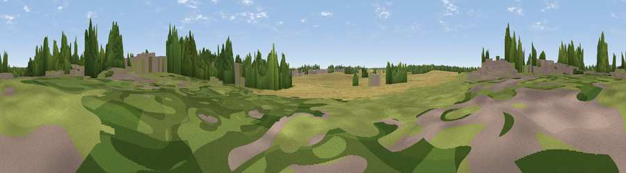

Viewpoint near Thorpe on the Hill
#44388 in England · top 84% of its area beats it · near Thorpe on the HillWhere it is
The exact computed spot (SK 90661 65486). Click the marker for map links.
The view, rendered

A 360° render of this exact spot computed from the terrain model, tree cover and land cover — summer colours, afternoon light, calibrated against photographs of famous viewpoints. Real trees, hedges and buildings will differ in detail.
The panorama
Grey silhouette: terrain skyline in each direction (720 bearings, Earth curvature and refraction included). Dashed green: skyline with trees (+15 m) and buildings (+8 m) as obstacles. Blue strip: how far the ground is visible on each bearing.
Where the view opens
Wedge length = distance to the farthest visible ground on that bearing (vegetation-aware). Rings at 10, 25 and 50 km.
What fills the view
62% cropland · 17% grassland · 14% woodland · 7% built-up ·
Angular shares of the visible panorama (visual magnitude), not map area. Landscape diversity 0.47 (0–1 Shannon).
Key numbers
More beautiful places nearby
The staircase of upgrades: each row has a higher view potential than everything closer. Driving times are estimates from straight-line distance, calibrated against real road routing — check an actual route before setting out.
| Place | Direction | Drive | Score |
|---|---|---|---|
| Viewpoint near Witham St Hughs | SW · 2 km | ~6 min | 28.7 |
| Slacks Hill | WNW · 4 km | ~9 min | 41.0 |
| Viewpoint near Lincoln | NE · 9 km | ~18 min | 54.0 |
| Viewpoint near Burton-by-Lincoln | NNE · 11 km | ~22 min | 54.9 |
| Viewpoint near Great Gonerby | S · 26 km | ~42 min | 62.0 |
| Burstheart Hill [Thoresby Colliery] | W · 27 km | ~44 min | 69.3 |
| Viewpoint near Belvoir | SSW · 33 km | ~51 min | 70.8 |
| Viewpoint near Claxby | NE · 36 km | ~55 min | 71.5 |
53.17877, -0.64493 · source: osm peak · position refined by local search. Computed location — check access rights before visiting.